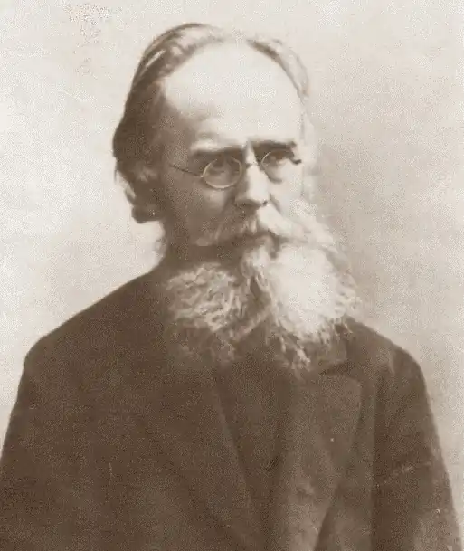

Професор Харківського університету і лідер харківської школи мовознавства, Потебня був також редактором та видавцем творів письменників Гулака-Артемовського, Квітки-Основ’яненка і Манжури.
Олександр Потебня народився 22 вересня 1835 року в селі Гаврилівці на Сумщині. Він закінчив гімназію у польському місті Радомі та історико-філологічний факультет Харківського університету. Після захисту магістерської дисертації 1860 року Потебня продовжив навчання у Берліні, а 1874 року захистив докторську дисертацію.
Професор Харківського університету і лідер харківської школи мовознавства, Потебня був також редактором та видавцем творів письменників Гулака-Артемовського, Квітки-Основ’яненка і Манжури. Він перекладав "Одіссею" українською мовою, а серед найвідоміших його наукових праць був коментар до "Слова о полку Ігоревім". Потебня розглядав мову насамперед як засіб упорядкування людиною вражень від довкілля, як інструмент пізнання світу. Слово несе не тільки значення предмета, а і попередній досвід особи та нації. Його зміст фіксується у символах фольклору і постійно відновлюється літературою. На думку вченого, мова є неповторною для кожної нації можливістю мислення та самого життя (цитата): "Не лише найкраща, а і певна, єдина прикмета, за якою ми впізнаємо народ, і разом з тим єдина, незамінна нічим та неодмінна умова існування народу, є єдність мови". Відтак, вважав Потебня, усвідомлення людиною своєї національної приналежності ґрунтується на своєрідному "вродженому націоналізмі", притаманному тільки даному народу. Тому він застерігав проти національної асиміляції, яка для нього була тотожна душевному розкладу. Розчинення однієї нації в іншій збіднює людство загалом, веде до дезорганізації суспільства та деградації особистості. Історичний розвиток народів за нормальних обставин, наголошував Потебня, має наслідком не денаціоналізацію, а взаємне пристосування націй. "Цивілізація, – писав він, – не лише сама по собі не загладжує народностей, а і сприяє їхньому зміцненню". О. О. Потебня – мовознавець, літературознавець, фольклорист. У Харківському університеті працював професором кафедри російської мови й словесності (1859-60–1891), кафедри слов’янознавства (1871). Якщо не рахувати кандидатської дисертації "Первые годы войны Хмельницкого", що залишилася ненадрукованою, першою ученою працею О. О. Потебні була магістерська дисертація "О некоторых символах в славянской народной поэзии" (1861), пізніше "Мысль и язык" (1862), "О мифическом значении некоторых обрядов" (1865). Докторську дисертацію "Из записок по русской грамматике" захистив 1874 р. За цю працю удостоєний Ломоносівської премії. Цього ж року був обраний членом-кореспондентом Російської Академії Наук по відділу російської мови й словесності. У 1865 р. був обраний дійсним членом Московського археологічного товариства, у 1877 р. – дійсним членом товариства шанувальників російської словесності при імператорському Московському університеті. Протягом 1860–1863 рр. був секретарем словесного факультету Харківського університету. З 1877 р. до 1890 р. був головою Харківського історико-філологічного товариства. Провідними в науковій тематиці Ліфту були питання, пов’язані з історією, культурою Лівобережної України. Сам О. О. Потебня постійно виступав на засіданнях товариства з доповідями, присвяченими найрізноманітнішим проблемам мови, літератури, народної поезії. етнографії: "О значении слова "Русь" в связи с некоторыми явлениями русского полногласия", "О заимствованиях из немецкого в малорусском языке", "Село, деревня и тому подобные слова (К истории быта)", "Сербская песнь о Юрии Даничиче" тощо. 1895 р. при Ліфті була заснована премія ім. О. О. Потебні, яка присуджувалася студентам Харківського університету за кращу роботу з історії російської мови й літератури. О. О. Потебня був одним із перших у вітчизняній науці представників психологічної школи в літературознавстві, який дав систематизований виклад її ідей у працях "Мысль и язык" (1862), "Из лекций по теории словесности" (1894), "Из записок по теории словесности" (1905). Основна увага в них сконцентрована на вивченні психологічних механізмів творчості; етапів її здійснення від виокремлення з дійсності комплексу явищ, фактів споріднених або протилежних поглядам митця на світ, через входження об’єктивної інформації в свідомість, підсвідомість письменника до її реінкарнації у конкретно-чуттєву форму художнього образу й сприйняття реципієнтом, який фактично є співавтором, бо відбирає з тексту суголосне власній психофізіології, перетворюючи його у свідомості. А оскільки автор і реципієнт є постійно внутрішньо змінними, що й зумовлює існування безкінечної кількості інтерпретацій тексту, то у кожен момент їх існування текст одночасно той самий і ні, що фактично є передбаченням основних відкриттів феноменології. Чимало зробив О. О. Потебня і в царині українознавчих студій. Зокрема велику увагу приділяв він вивченню української мови, оригінального українського фольклору, про що свідчать такі його праці, як: "Заметки о малорусском наречии" (1870), "Малорусская народная песня по списку XVI ст. Текст и примечания" (1877), "Объяснение малорусских и сродных песен" (перший том – "Веснянки", 1883; другий том – "Колядки", 1887). Редагував зібрання творів Г. Квітки-Основ’яненка у чотирьох томах (1887–1890), П. Артемівського-Гулака (1888), поетичну збірку І. Манжури "Степові думи та співи" (1889). Перекладав українським гекзаметром "Одіссею" Гомера. 1879 р. одержав золоту медаль за оцінку праці П. Житецького "Очерк звуковой истории малороссийского наречия", а в 1879 р. – золоту медаль за оцінку збірки "Народні пісні Галицької та Угорської Русі" Я. Головацького.